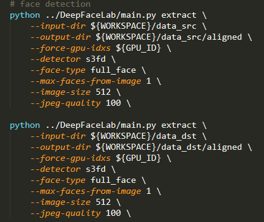

DeepFaceLab
DeepFaceLab 运行步骤
若要把A（某明星）的脸换在B（某普通人）头上，那么A是src，B是dst。 A—>B
一、Video—>Frame
视频转换成帧：默认情况下一秒截30个frame，deepfake实质上是在每一帧上进行人脸的替换融合，因此第一步需要将视频转为帧图片。并保存在data_src和data_dst文件下。
二、Extraction
人脸提取，对视频帧来说，并不是每一帧图片中都含有人脸，因此需要在这一步将含有人脸的frame给挑选出来。
Face detection：第一步是人脸检测，对data_src和data_dst中的图片进行人脸检测，用到的模型有S3FD、RetinaFace、MTCNN，默认情况下使用的是S3FD。
Face Alignment：第二步是人脸对齐，需要用到landmarks对人脸关键点进行定位，提供了两种选择，1）是2DFAN；2）是PRNet。处理后的图片存到了aligned文件夹下。
Face Segmentation：第三步是可选，做人脸分割，将人脸不同部位做切分，为了使得模型在人脸戴有眼镜和手部遮挡等障碍物时更加robust，这里引入了XSeg，允许在小数据集上做切割。

三、Training
训练这一步是最关键的，为了解决src和dst人脸不严格匹配的问题，采用共享Encoder权重的方法实现泛化，这里提供了两种训练架构，DF和LIAE。后面的GAN是可选的，源码默认的应该是不带GAN的DF框架。
四、Conversion
转化这一步首先需要把src通过dst的decoder生成的face根据对齐步骤生成的mask放到dst对应的人脸部位；
接下来是blending步骤，达到肤色融合的目的，DFL提供了多种肤色融合算法，如RCT、IDT，定义了泊松融合优化问题；
接下来是sharpening锐化，让生成的图片的纹理更加明显一些。
到此为止，就得到了换脸后的图片。
五、Frame—>Video
最后一步，将换脸后的图片进行压缩形成视频。